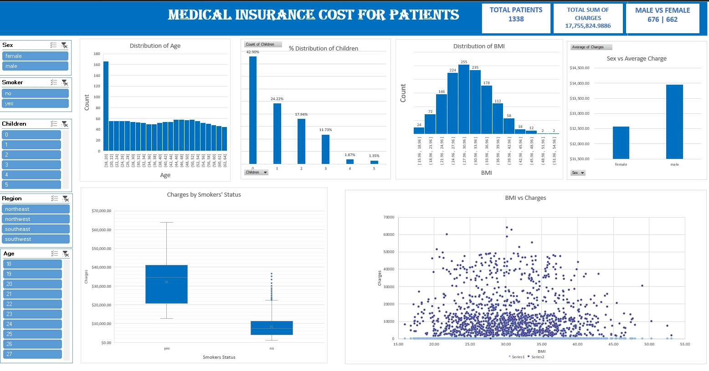

I analyzed the fiscal and macroeconomic performance of major African economies using the Africa Fiscal Dataset. Working with over 23,000 records, I cleaned and explored key indicators such as budget balance, revenue, expenditure, GDP, inflation, government debt, trade balance, and unemployment. I applied AI-driven anomaly detection and predictive modeling to uncover instability risks and forecast economic trends through 2030. The project resulted in FiscalGuard, a strategic dashboard I built to provide a holistic, data-driven roadmap for strengthening fiscal resilience.

I carried out Sales Data analysis in Alteryx with four real-world datasets. I prepared, blended, and analyzed Customer Orders (East & West), Order Details, and Regional mappings to uncover critical trends. The goal was to evaluate performance metrics and identify key drivers of success. This workflow demonstrates how to transform raw data into actionable insights, enabling informed business decisions and strategic planning.

Exploratory Data Analysis and Prediction on Zara Sales Dataset to optimize product strategy. I analyzed 20,000+ items to uncover hidden revenue drivers, discovering that strategic price cuts on Winter gear could maximize total profits. The project culminated in a custom predictive tool that allows merchants to identify potential bestsellers before production.

This project performs an exploratory data analysis on medical insurance records of some patients using Excel. It utilizes descriptive statistics, correlation matrices, and pivot tables to identify key cost drivers. The findings reveal that lifestyle choices, particularly smoking status, are the most significant predictors of higher insurance charges.